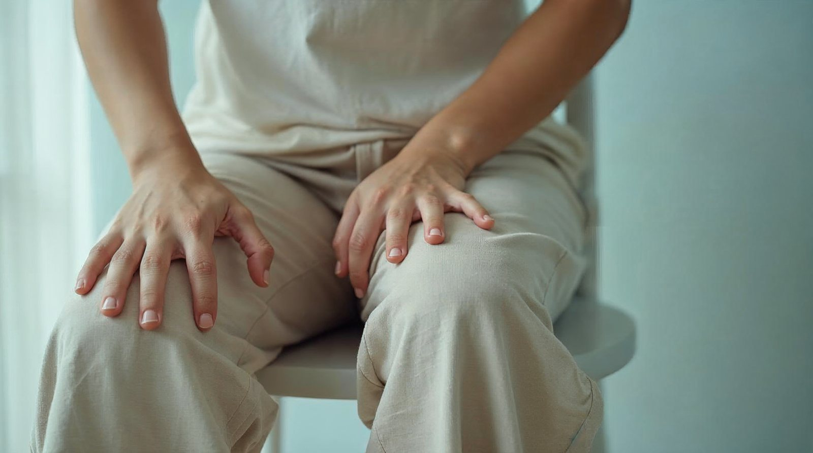
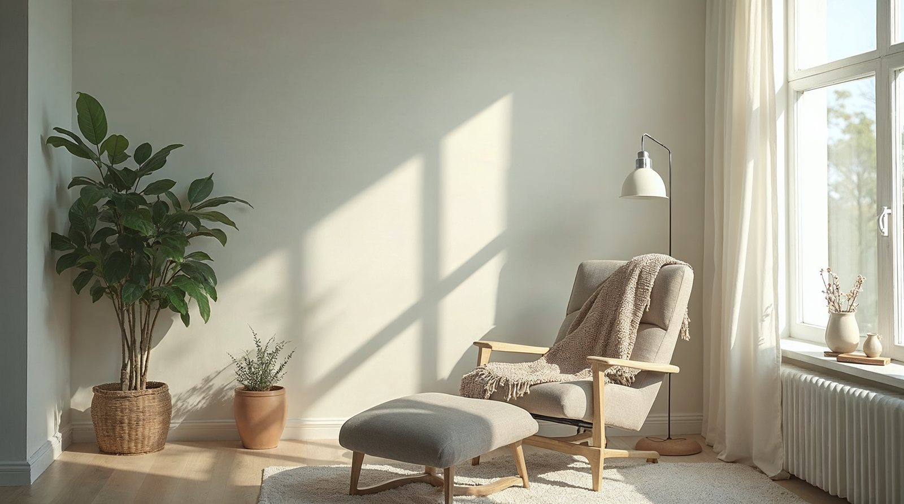
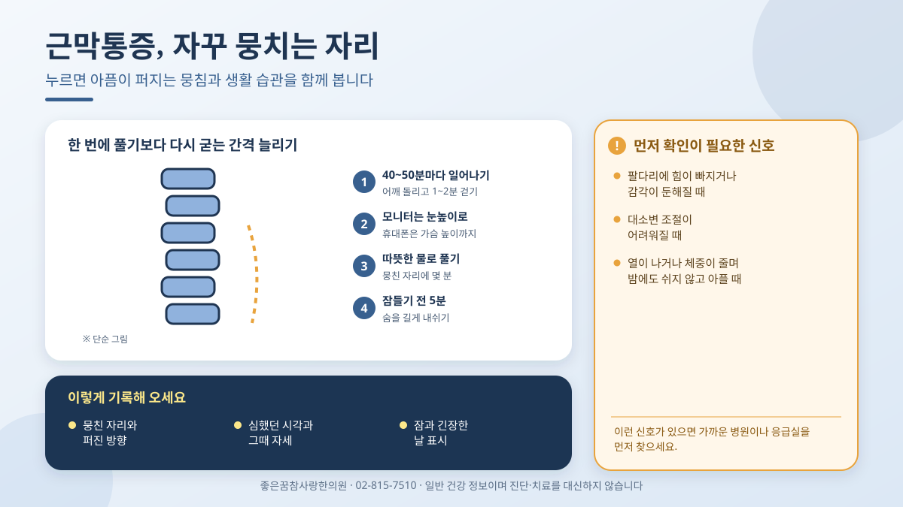

이종호 한의사 감수좋은꿈참사랑한의원 대표원장 (한의사 면허번호 19769)발행 2026-11-26 · 수정 2026-11-26
이 글의 차례
퇴근길 지하철에서 손잡이를 잡고 서 있다가 무심코 어깨를 주물러 봅니다. 날개뼈 안쪽에 딱딱한 덩어리가 손끝에 걸리고, 꾹 누르면 목 뒤까지 저릿하게 뻗칩니다. 집에 가서 파스를 붙이고 자면 조금 나은 듯하다가, 며칠 지나면 같은 자리가 또 돌처럼 굳어 있습니다.
진료실에서 "선생님, 저는 담이 달고 살아요"라고 말씀하시는 분이 정말 많습니다. 어깨, 날개뼈 사이, 뒷목, 허리 옆, 엉덩이 위쪽처럼 자리는 사람마다 다르지만 이야기의 흐름은 비슷합니다. 늘 뭉쳐 있고, 주무르면 잠깐 시원하고, 금세 다시 그 자리로 돌아온다는 것입니다.
이렇게 근육과 그 근육을 감싸는 막에 단단하게 뭉친 자리가 생기고, 그 자리를 누르면 아픔이 다른 곳까지 퍼지는 상태를 근막통증증후군이라고 부릅니다. 이름은 어렵지만 우리가 흔히 '담 걸렸다', '근육이 뭉쳤다'고 표현하는 것과 많이 겹칩니다.
오늘은 이 오래된 뭉침이 왜 같은 자리에서 반복되는지, 비슷해 보이는 다른 통증과는 어떻게 다른지, 그리고 진료실에서는 무엇을 여쭙고 어떻게 함께 살피는지 차근차근 말씀드려 보겠습니다.
근막통증증후군은 어떤 상태인가요?
우리 몸의 근육은 얇고 질긴 막에 싸여 있습니다. 이 막은 근육이 미끄러지듯 움직이게 돕고, 옆 근육과 힘을 나누어 쓰게 해 줍니다. 그런데 한 자세를 오래 유지하거나 같은 동작을 반복하면, 근육의 일부가 풀리지 못하고 작게 수축한 채로 남는 자리가 생깁니다.
이렇게 단단해진 작은 자리를 흔히 통증 유발점이라고 부릅니다. 손으로 만져 보면 근육 결을 따라 팽팽한 줄이 느껴지고, 그 줄 위에 콩알만 한 뭉침이 잡힙니다. 그 점을 누르면 그 자리만 아픈 것이 아니라 머리, 팔, 엉덩이 쪽으로 아픔이 뻗치는 것이 특징입니다.
예를 들어 어깨 위 근육의 뭉침은 관자놀이 쪽 두통처럼 느껴질 수 있고, 날개뼈 안쪽 뭉침은 팔 뒤쪽까지 묵직함을 만들기도 합니다. 그래서 아픈 곳과 원인이 되는 자리가 서로 떨어져 있는 경우가 적지 않습니다.
왜 같은 자리가 자꾸 뭉칠까요
근막통증은 한 번 생기면 그 자리가 기억이라도 하는 것처럼 반복되는 경우가 많습니다. 뭉친 근육은 피가 잘 돌지 않아 더 쉽게 지치고, 지친 근육은 다시 굳기 쉬운 고리가 만들어지기 때문입니다.
- 모니터나 휴대폰을 보며 목을 앞으로 내민 자세가 하루 몇 시간씩 이어질 때
- 한쪽 어깨로만 가방을 메거나 한쪽 팔만 계속 쓰는 일을 할 때
- 잠이 얕고 자주 깨서 근육이 밤사이 충분히 쉬지 못할 때
- 긴장하거나 쫓기는 날이 이어져 어깨가 귀 쪽으로 올라가 있을 때
- 추운 날씨에 몸을 움츠리고 다니는 시간이 길 때
- 갑자기 무리한 운동이나 이사, 대청소를 한 뒤
이 가운데 잠과 긴장은 놓치기 쉽습니다. 같은 일을 해도 잠을 설친 주에는 뭉침이 더 단단해지고, 마음이 편한 주에는 덜하다고 말씀하시는 분이 많습니다. 근육은 우리가 사는 하루를 그대로 담고 있다고 생각하시면 이해가 쉽습니다.
한의학에서는 이런 상태를 기혈이 한 자리에 머물러 잘 흐르지 못하는 모습으로 봅니다. 찬 기운이나 습한 기운이 더해지면 뭉침이 더 무겁게 느껴진다고 보기도 합니다. 그래서 아픈 자리만이 아니라 몸 전체의 흐름과 온도, 잠을 함께 살피려고 합니다.
다른 통증과는 어떻게 다른가요?
어깨나 허리가 아프다고 모두 근막통증은 아닙니다. 비슷하게 느껴지지만 살펴보는 방향이 다른 경우가 있어서, 처음 오시면 이 부분을 먼저 구분해 봅니다.
- 단순 근육통: 운동이나 일을 한 뒤 하루 이틀 뻐근하다가 며칠 안에 사라집니다. 근막통증은 몇 주, 몇 달씩 같은 자리가 반복된다는 점이 다릅니다.
- 목·허리 디스크로 인한 통증: 팔이나 다리로 전기가 오듯 저리고, 감각이 둔해지거나 힘이 빠지는 일이 함께 생길 수 있습니다.
- 어깨 관절 문제: 팔을 특정 방향으로 들 때 걸리거나 밤에 어깨 자체가 쑤시는 경우가 많습니다.
- 섬유근육통: 한두 자리가 아니라 온몸 여러 곳이 넓게 아프고, 피로와 잠 문제가 함께 큰 경우가 많습니다.
근막통증은 뭉친 점을 누르면 늘 아프던 그 아픔이 그대로 재현된다는 특징이 있습니다. "바로 거기예요"라는 말이 나오는 자리를 찾는 것이 진찰의 중요한 출발점입니다.
집에서 스스로 짚어 보는 방법
거울 앞에 서서 어깨 높이가 양쪽이 같은지, 목이 한쪽으로 기울어 있지는 않은지 먼저 보세요. 그다음 반대쪽 손으로 아픈 쪽 어깨 위 근육을 엄지와 검지로 집듯이 잡아 봅니다. 팽팽한 줄과 작은 뭉침이 느껴지는지, 누르면 아픔이 어디로 퍼지는지 확인해 보시면 됩니다.
목을 천천히 좌우로 돌리고 귀를 어깨 쪽으로 기울여 보는 것도 좋습니다. 어느 방향에서 당기고 어디가 막히는지 적어 두시면, 진료실에서 어떤 근육을 먼저 볼지 정하는 데 큰 도움이 됩니다.
다만 뭉친 자리를 찾았다고 세게 오래 누르는 것은 권하지 않습니다. 너무 강한 자극은 다음 날 오히려 근육을 더 예민하게 만들 수 있습니다. 확인하는 정도로만 가볍게 눌러 보세요.

자리마다 뭉침이 남기는 모양이 다릅니다
뒷목 아래, 머리뼈가 끝나는 자리의 뭉침은 눈 뒤가 무겁고 머리 뒤쪽이 조이는 두통으로 이어지기 쉽습니다. 오후가 되면 눈이 침침하고 머리가 띵하다는 분 가운데 이 자리가 단단하게 굳어 있는 경우가 많습니다.
어깨 위 넓은 근육이 뭉치면 어깨에 무거운 짐을 얹은 느낌이 들고, 관자놀이 쪽까지 당김이 올라오기도 합니다. 고개를 반대쪽으로 기울일 때 당기는 느낌이 가장 크게 나타납니다.
날개뼈 안쪽, 등 한가운데의 뭉침은 숨을 깊게 들이쉴 때 걸리는 느낌을 만들기도 합니다. 의자에 등을 기대면 그 자리가 배기고, 누가 꾹 눌러 주면 시원하다고 말씀하시는 자리입니다.
허리 옆과 엉덩이 위쪽 뭉침은 오래 앉았다 일어설 때 허리를 바로 펴기 힘들게 만들고, 엉덩이와 허벅지 바깥으로 묵직함을 퍼뜨리기도 합니다. 다리가 저리다고 느끼시지만 실제로는 근육에서 퍼지는 아픔인 경우도 있어서 꼼꼼히 구분해 봅니다.
이렇게 아픔이 퍼지는 모양을 알고 나면, 머리가 아픈데 목을 보고 팔이 무거운데 등을 보는 이유를 이해하실 수 있습니다. 아픈 곳만 계속 주무르는데 잘 풀리지 않았다면, 원인이 되는 자리가 따로 있었을 수도 있습니다. 진찰 때 제가 아프다고 하신 곳보다 조금 떨어진 자리를 만지는 것도 같은 까닭입니다.
먼저 이렇게 여쭙니다
처음 오시면 저는 대략 이런 순서로 여쭙니다. 미리 생각해 오시면 이야기가 훨씬 수월해집니다.
- 가장 불편한 자리는 어디이고, 그 아픔은 어디까지 퍼지나요?
- 언제부터 반복되었고, 한 번 뭉치면 며칠쯤 가나요?
- 하루 중 언제 가장 심하고, 어떤 자세나 일을 하면 더 굳나요?
- 팔이나 다리가 저리거나 힘이 빠지는 느낌이 함께 있나요?
- 잠은 몇 시간 주무시고, 자다가 아파서 깨는 일이 있나요?
- 요즘 긴장하거나 쫓기는 일이 많으신가요?
- 드시는 약이나 붙이는 파스, 받아 본 치료가 있나요?
대답을 들으며 뭉친 자리가 생활의 어느 부분과 맞닿아 있는지 찾아갑니다. 같은 어깨 뭉침이라도 책상 앞 자세에서 오는 분과 잠을 설쳐서 오는 분은 해 볼 일이 조금씩 다르기 때문입니다.

일상에서 먼저 해 볼 수 있는 것
뭉침을 한 번에 없애려 하기보다, 근육이 다시 굳지 않도록 하루의 습관을 조금씩 바꾸는 것이 오래갑니다.
- 한 자세로 40~50분 앉아 있었다면 일어나 어깨를 크게 돌리고 1~2분 걷기
- 모니터 윗부분을 눈높이에 맞추고, 휴대폰은 가슴 높이까지 들어 보기
- 가방은 양쪽으로 메거나 자주 바꿔 들기
- 샤워할 때 따뜻한 물을 뭉친 자리에 몇 분 대 주기
- 잠들기 전 5분 동안 등을 대고 누워 숨을 길게 내쉬기
- 찬 바람이 부는 날은 목과 어깨를 덮는 옷 챙기기
스트레칭은 아프지 않은 범위에서 천천히, 20~30초 정도 머물렀다가 돌아오는 방식이 좋습니다. 반동을 주거나 아픔을 참으며 끝까지 당기면 근육이 오히려 놀라서 더 굳을 수 있습니다.
마사지 공이나 폼롤러를 쓰신다면 뭉친 자리에 가볍게 기대어 숨을 내쉬는 정도로 충분합니다. 같은 자리를 오래 문지르기보다 짧게 여러 번 나누어 하시는 편이 부담이 적습니다.
한의원에서 함께 살필 수 있는 경우
- 몇 주 넘게 같은 자리가 반복해서 뭉치는 경우
- 뭉친 곳을 누르면 머리나 팔 쪽으로 아픔이 퍼지는 경우
- 담이 걸릴 때마다 목이나 허리를 돌리기 힘든 경우
- 잠을 설치거나 긴장한 날 뭉침이 유난히 심해지는 경우
- 파스나 마사지로 잠깐 시원하다가 금세 돌아오는 경우
좋은꿈참사랑한의원에 오시면 먼저 저림이나 힘 빠짐처럼 다른 원인을 의심할 신호가 없는지 확인합니다. 그다음 맥을 짚고, 뭉친 자리를 직접 만져 굳은 띠와 퍼지는 방향을 찾습니다. 자세와 움직이는 범위도 함께 봅니다.
진찰한 내용을 바탕으로 침, 약침, 부항, 온열 관리, 추나 가운데 지금 상태에 맞는 것을 고릅니다. 잠이나 긴장, 몸의 냉함이 함께 얽혀 있다면 한약 상담을 함께 드리기도 하는데, 드시는 약을 확인한 뒤 신중하게 정합니다.
임신 중이시거나 임신 가능성이 있다면 진료 전에 먼저 알려 주세요. 치료 자리와 방법을 고를 때 반영하고, 필요하면 산부인과와 상의하시도록 안내합니다. 정형외과나 재활의학과에서 받고 계신 치료가 있다면 그대로 이어 가셔도 됩니다.
진료를 받은 날은 어떻게 지내면 좋을까요?
침이나 부항을 받은 날은 뭉쳤던 자리가 한결 가볍게 느껴지기도 하고, 반대로 하루 정도 묵직하게 느껴지기도 합니다. 굳어 있던 근육이 움직이기 시작하면서 생기는 느낌인 경우가 많아서, 너무 걱정하지 않으셔도 됩니다.
그날은 무거운 운동이나 오랜 사우나는 피하시고, 따뜻하게 지내면서 물을 조금 넉넉히 드시길 권합니다. 가볍게 걷거나 어깨를 천천히 돌리는 정도의 움직임은 오히려 도움이 될 수 있습니다.
다음 날 아침에 어떤 느낌이었는지 기억해 두셨다가 다음 진료 때 말씀해 주세요. 그 반응을 보고 자극의 세기와 방법을 다시 맞춥니다. 불편했던 점도 그대로 말씀해 주시는 것이 진료를 맞춰 가는 데 가장 큰 도움이 됩니다.
이렇게 기록해 오시면 상담이 쉬워집니다
뭉침은 진료실에 오시는 날의 상태만으로는 흐름을 알기 어렵습니다. 1~2주 정도만 간단히 적어 보세요.
- 뭉친 자리와 아픔이 퍼진 방향(몸 그림에 표시해도 좋습니다)
- 가장 심했던 시각과 그때 하던 일이나 자세
- 잠든 시각과 깬 시각, 자다 깬 횟수
- 긴장하거나 바빴던 날 표시
- 스트레칭, 찜질처럼 해 본 것과 그 뒤의 느낌
기록을 나란히 놓고 보면 뭉침이 심했던 날과 생활 사이의 연결이 보이기 시작합니다. 그 연결 고리 하나를 바꾸는 것이 다음 걸음이 됩니다.
오래 뭉친 근육과 사이좋게 지내려면
오래 반복된 뭉침은 하루아침에 생긴 것이 아니어서, 풀어 가는 데에도 시간이 필요합니다. 한 번에 다 풀겠다는 마음보다 다시 굳는 간격을 조금씩 늘려 간다는 마음으로 접근하시는 편이 덜 지칩니다.
뭉침이 덜한 날이 하루 이틀 늘어나는 것, 담이 걸려도 예전보다 빨리 풀리는 것, 아침에 목을 돌리기가 조금 수월해지는 것. 이런 작은 변화를 알아차리는 것만으로도 몸을 대하는 마음이 한결 가벼워집니다. 그 변화를 함께 찾아보는 것이 제가 진료실에서 하고 싶은 일입니다.
이번 주에는 앉아 있는 시간 사이에 일어나는 습관 하나만 골라 보세요. 다음에 오시면 기록을 함께 펼쳐 보면서, 어느 자리가 먼저 덜 굳는지 같이 확인해 보겠습니다.
이런 증상은 먼저 확인이 필요합니다
- 팔이나 다리에 힘이 빠지거나 감각이 둔해지고, 대소변 조절이 어려워지는 경우
- 열이 나거나 체중이 이유 없이 줄면서 밤에도 쉬지 않고 아픈 경우
이런 신호가 있으면 한의원보다 가까운 병원이나 응급실을 먼저 찾으세요.
함께 읽으면 좋은 글
- 어깨에 담이 걸려 쇄골·목 주변까지 당길 때 첫 며칠은 어떻게 하나요?
- 자고 일어나면 목이 돌아가지 않는 목 담·목 염좌가 자꾸 반복될 때는 어떻게 살피나요?
- 스트레스를 받으면 뒷목이 당기고 머리가 아픈 긴장성 두통은 어떻게 살피나요?
- 온몸이 쑤시고 검사는 정상이라는 섬유근육통은 어떻게 살피나요?
- 근육이 아픈 것인지 관절이 아픈 것인지 어떻게 짚어서 말하나요?

여쭙는 것
- 가장 불편한 자리는 어디이고, 그 아픔은 어디까지 퍼지나요?
- 언제부터 반복되었고, 한 번 뭉치면 며칠쯤 가나요?
- 하루 중 언제 가장 심하고, 어떤 자세나 일을 하면 더 굳나요?
생활에서 해 볼 것
- 한 자세로 40~50분 앉아 있었다면 일어나 어깨를 크게 돌리고 1~2분 걷기
- 모니터 윗부분을 눈높이에 맞추고, 휴대폰은 가슴 높이까지 들어 보기
- 가방은 양쪽으로 메거나 자주 바꿔 들기
한의원에서 함께 살필 것
- 몇 주 넘게 같은 자리가 반복해서 뭉치는 경우
- 뭉친 곳을 누르면 머리나 팔 쪽으로 아픔이 퍼지는 경우
- 담이 걸릴 때마다 목이나 허리를 돌리기 힘든 경우
먼저 확인이 필요한 신호
- 팔이나 다리에 힘이 빠지거나 감각이 둔해지고, 대소변 조절이 어려워지는 경우
- 열이 나거나 체중이 이유 없이 줄면서 밤에도 쉬지 않고 아픈 경우
한눈에 보는 표
| 구분 | 핵심 |
|---|---|
| 여쭙는 것 | 가장 불편한 자리는 어디이고, 그 아픔은 어디까지 퍼지나요? 언제부터 반복되었고, 한 번 뭉치면 며칠쯤 가나요? |
| 생활에서 해 볼 것 | 한 자세로 40~50분 앉아 있었다면 일어나 어깨를 크게 돌리고 1~2분 걷기 모니터 윗부분을 눈높이에 맞추고, 휴대폰은 가슴 높이까지 들어 보기 |
| 한의원에서 함께 살필 것 | 몇 주 넘게 같은 자리가 반복해서 뭉치는 경우 뭉친 곳을 누르면 머리나 팔 쪽으로 아픔이 퍼지는 경우 |
| 먼저 확인이 필요한 신호 | 팔이나 다리에 힘이 빠지거나 감각이 둔해지고, 대소변 조절이 어려워지는 경우 열이 나거나 체중이 이유 없이 줄면서 밤에도 쉬지 않고 아픈 경우 |
자주 묻는 질문
담이 걸렸다는 말과 근막통증증후군은 같은 건가요?
많이 겹칩니다. 흔히 담이라고 부르는 갑작스러운 뭉침과 당김 가운데, 같은 자리에 단단한 뭉침이 반복되고 누르면 아픔이 퍼지는 경우를 근막통증으로 봅니다.
뭉친 곳은 세게 주무를수록 빨리 풀리나요?
너무 세게 오래 누르면 다음 날 근육이 더 예민해질 수 있습니다. 가볍게 누르고 숨을 내쉬는 정도로, 짧게 여러 번 나누어 하시길 권합니다.
찜질은 따뜻한 것과 찬 것 중 무엇이 좋나요?
오래 반복되는 뭉침에는 대개 따뜻한 찜질이 편하게 느껴집니다. 갑자기 다쳐서 붓고 열감이 있다면 처음 하루 이틀은 차게 하는 편이 좋습니다.
침 치료는 얼마나 자주 받아야 하나요?
진찰한 뒤 뭉침의 정도와 생활 리듬을 보고 함께 정합니다. 처음에는 간격을 좁게 잡고, 덜 굳는 간격이 늘어나면 차츰 넓혀 가는 경우가 많습니다. 생활에서 바꾼 습관이 자리를 잡는지도 함께 봅니다.
진통제를 먹고 있는데 침 치료를 함께 받아도 되나요?
드시는 약을 알려 주시면 그에 맞춰 진료 방향을 정합니다. 처방받은 약은 처방한 선생님과 상의 없이 멈추지 마세요.
좋은꿈참사랑한의원은 재진 때 지난번 이야기부터 이어서 여쭙니다. 진료시간과 예약은 오시는 길에서 확인하세요.
어디서 상담받을 수 있나요?
좋은꿈참사랑한의원은 서울 동작구 만양로2길 2 신성빌딩 3층·5층(서울 동작구 상도동, 7호선 상도역 3번 출구 근처)에 있습니다. 한의사 3명(이종호 대표원장, 조영기 수석진료원장, 정원영 진료원장)이 진료합니다. 진료시간은 평일 09:30~20:00(점심 13:00~14:00), 토·일·공휴일 09:30~15:00이며, 방문 전 전화로 확인을 권합니다. 예약은 네이버 예약, 카카오톡 상담, 전화 02-815-7510로 받습니다.
이 글은 일반적인 건강 정보이며 개인의 진단이나 치료를 대신하지 않습니다. 증상이 있거나 복용 중인 약이 있다면 진료를 통해 확인하세요. 치료 효과는 개인마다 다를 수 있습니다.
작성 기준: 일반적으로 알려져 있는 건강 정보를 참고해 정리했습니다(대표원장 감수). 증상 기록은 1~2주 동안 하루 1회, 비슷한 시간에 적어 오시면 지난 상태와 비교하기 쉽습니다.